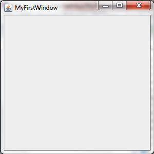
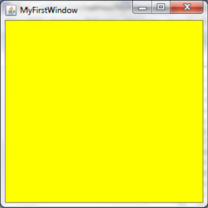

MyFirstWindow
Chapter 2 is all about Graphics. To make your first GUI (graphical user interface) application, i.e. GUIpplication, you need to use the package javax.swing.JFrame. Here is an example of an empty window:
public class MyFirstWindow extends JFrame {
public static void main(String[] args) {
new MyFirstWindow();
}
public MyFirstWindow() {
setSize(300, 300);
setTitle("MyFirstWindow");
setVisible(true);
setDefaultCloseOperation(EXIT_ON_CLOSE);
}
}
Here, the class MyFirstWindow inherits, thanks to the extends keyword, all of properties and methods of the JFrame. That means an object of a MyFirstWindow is also, in essense, and object of JFrame. The difference is in the custom methods of MyFirstWindow such as the constructor, where the title, size, and visibility are set. You may say that setTitle, setSize, and setVisible do not exist, but they are extended JFrame methods. setDefaultCloseOperation(EXIT_ON_CLOSE), meanwhile just ensures that the Java app doesn't lay running hidden in the background.
The code above should output this when run:

Colouring these Windows
These windows are not limited to a dull, boring grey, in fact these windows can be set to pretty much any colour under the Sun. To do this you will have to import Color, using the import:
import java.awt.Color;
To use this import you will have to use the following syntax:
getContentPane().setBackground(Color.YELLOW);
//this will create a yellow window, however you can replace this with other colours.
If you couple this with extends JFrame in the class, you will create a yellow window. Bear in mind however that if you do not use extends JFrame and instead declare a JFrame inside the method, you will have to do this:
frame.getContentPane().setBackground(Color.YELLOW);
//where 'frame' is the name of the JFrame.
This particular piece of code would putput the following:

Ex 1
Copy & run the code. Play around with setSize, setTitle, setVisible and setBackground().
Ex 2
Research the setResizable() method and create another window called MySecondWindow which cannot be resized.
HINT: You don't actually need to research it, it either can or cannot be resized.